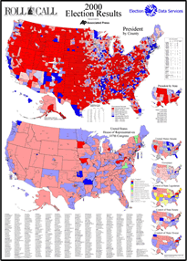

| system |
| home page |
| Privacy Policy Please send comments or questions regarding this site to the webmaster Research Established in 1993, the Corporation for National Service engages more than a million Americans in service to their communities. . Recommendations of the Board of Directors of the Corporation for National Service to the President and Congress - Oct 2000 Free Adobe Acrobat Readers for the following PDF files are available to all users. Adobe has online tools to convert PDF documents into either HTML or ASCII text so they can be read by a number of common screen reader programs. Privacy Policy Please send comments or questions regarding this site to the webmaster Research Established in 1993, the Corporation for National Service engages more than a million Americans in service to their communities. |
|  | . Therefore, it is important that your browser is able to view these features. We fully test our Web service with common browsers available from the two market leaders who together provide nearly all of the browsers present on the workstations of our users. Currently, the minimum requirements are Netscape version 4. By obtaining one of these browsers (or later versions), you should be able to solve this problem. |